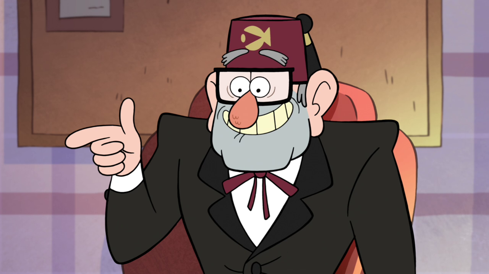

Гравити Фолз

Мэйбл Пайнс — жизнерадостная, энергичная, полная энтузиазма 12-летняя девочка (в конце сериала ей исполняется 13 лет), проводящая лето с дядей Стэном в Гравити Фолз, штат Орегон, где ей и Дипперу приходится постоянно сталкиваться с паранормальными явлениями города. Она относится к своей жизни намного проще, когда находится в новой обстановке, чем ее брат-близнец, а также обожает свою свинку Пухлю.
⁂⁂⁂
Пухля — домашний, ручной поросёнок Мэйбл, которого она выиграла на Ярмарке Чудес. Это светло-розовый поросёнок с более тёмным розовым пятном на левом глазу и двумя пятнами на левом боку, рядом с хвостом. Пухля весит 7 килограмм, а его любимой едой являются яблоки в карамели.
⁂⁂⁂
Диппер Пайнс - младший брат-близнец Мэйбл (родился на 5 минут позже). Дипперу 12 лет, он только начинает познавать окружающий мир. Любопытство и любознательность не дают подростку сидеть на месте, он то и дело ввязывается в приключения Однажды, дядя дает Дипперу задание распространить рекламные брошюры и мальчик забредает в лес, где обнаруживает дневник №3. В книжке описаны таинственные мистические события, происходящие в Гравити Фолз.
⁂⁂⁂
Стэнли «Стэн» Пайнс — двоюродный дедушка Диппера и Мэйбл Пайнс, постоянный житель городка Гравити Фолз.
После многих лет мошенничества и преступлений он поселился в отдаленном городке Гравити Фолз, где руководит ловушкой для туристов, Хижиной Чудес.
Стэн производит впечатление жадного и эгоистичного человека. Однажды он заявил, что цель его жизни состоит в обладании богатством и туристы для него — не более, чем кошельки, заполненные деньгами.